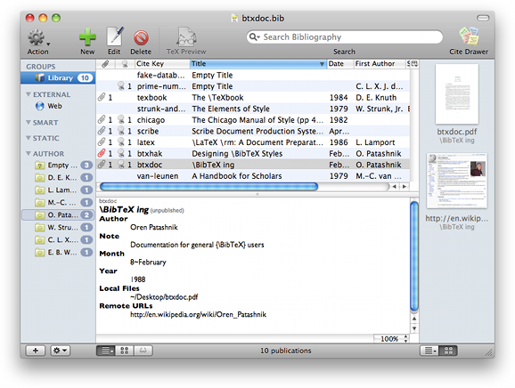

Browsing References Browsing References
Browsing References Browsing ReferencesThe references are presented in a table with a detail pane on the bottom of the window. You can sort the table by column by clicking on the name of each column, in the header of the table.

You can control the order of the columns by moving them directly.
To add a field that isn't displayed, use the column management menu. There are three ways to access this menu; In the menu bar under "View > Columns", by Control-clicking on a column name, or by clicking the small button at the top right of the table.
It has a menu of fields you can add, or you can choose to add any field that isn't listed by typing in the box. You can add a column for any field you like, even if that field doesn't exist in any of the publications listed.
You can also easily remove a column, by unchecking the columns name in one of the menus mentioned above.
The Columns usually simply display the content of the relevant field. There are a few special columns, where information is displayed that is more informative to the user. Below we discuss some of these special fields.
Normally, the Title column will display the content of a Title field, if it exists. For inbook type items, the Title refers to the title of the whole work. Therefore the Chapter field is added to the title displayed in the Title column. If this is empty, the Pages field is used, if available.
You have the option of showing Authors together or separately. If you simply select 'Author' you will get all the authors connected by 'and', if you choose First Author, well, you just get the First Author.
References can have both Authors and Editors. Most of the time the Authors are of primary interest, but some books don't have Authors, just Editors. If you select one of the Author options (eg First Author) and there is only an Editor, then the field will be blank. To avoid this choose the equivalent Author or Editor column (eg First Author or Editor), and the Editors will only be shown if there are no Authors.
In some academic fields the last author is the head of the lab, and users find it convenient to sort their papers by the last author. This can be done by adding the Last Author [or Editor] field.
The special column 'Container' can be added to the table. It is useful for types that are part of a larger document and displays the title of that 'Container' document. It will display a slightly different field depending on the type of the item.
Type | Container Field |
|---|---|
article | Journal |
incollection | Booktitle |
inproceedings | Booktitle |
conference | Booktitle |
inbook | Title |
book | Series |
commented | Volumetitle |
If you use a special type that has a container concept write to bibdesk-develop@lists.sourceforge.net and it can be added.
The Local File column is the column with the column with a paperclip icon in the header.
The Local File column displays a paperclip icon and the number of attached files when files are attached. If one of the linked files could not be found, the paperclip will be displayed in red. This way you can easily track missing linked files.
When a cell in the Local File column is double-clicked, the linked files will be opened using the default application for the corresponding file type. The linked files can also be dragged from the table to the Finder in order to copy it to another location, or it can be dragged into a specific application in the Dock to open the file in a specific application or perhaps mail it as an attachment.
The Remote URL column is the column with the column with an @-sign in the header.
Similarly, the Remote URL column displays a little webloc icon (a file icon with an @-sign) when the one or more URLs are attached to the pubblication. The column then also displays the number of linked URLs.
Double-clicking a cell in the Remote URL column will open the first linked remote URL in your default browser application.
The Publication Date column displays the date of the item, which is constructed from the Year and Month fields of the item.
The Item Number column shows a little #-mark in the header. The column displays the order of the item as it appears in the file.
The BibTeX Type column displays the publication type of the item. Be aware that Type is a different BibTeX field, unrelated to the BibTeX Type.